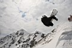
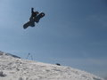
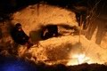
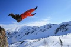
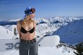
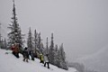
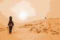
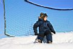
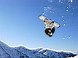

Новостя : Доскеры : Бродяги : Фотосы : Поприколу : Пиши сюда ! :
|
Don`t worry,
Be Happy ! Новостя : Доскеры : Бродяги : Фотосы : Поприколу : Пиши сюда ! : |
| ДОСКЕРЫ: сезон 2007-2008 доскинг, лыжинг, тропинг :) |
ДОСКЕРЫ Карта-схема Мамая Книга М. Отуотера В разделе "Фотосы" Тест-драйвы от Рассказ от
Всем, кто идет впервые могу посоветовать идти с нами, но для начала читатайте
описания мест катания на сайте Angara.Net : Сайты в тему: Доскинг - это фрирайд по нашему :) чем собственно мы и занимаемся зимой. А что делать, зима долгая, снега много, отдохнуть же как-то надо... Лыжинг - гоняем иногда на беговых лыжиках, по замерзшему Байкалу в январе-феврале-марте Тропинг - а бывает идешь покататься, а снег и мороз такой, что только и топчешь тропу в снегу по пояс, лишь бы только согреться, дойти живым до зимовья... russkiy ekstrim :)
|
 17-18
мая 2008. 17-18
мая 2008. Катально-зимушный сезон закрыт! - Ну так вот, поднялись мы на Три Березы, где по снегу, а где и по прошлогодней траве. И поееехали! По Большому кулуару. А ехать-то уже совсем трудно... |
|
 9-11
мая 2008. Сказание о Тальце - И вот съехались друзья со всех концов
света, Косма Умелый, Андрей Благородный, Ксения Краса, Ульянка Рукодельница,
Татьяна Златокудрая и Марина Сдредами, да и отправились в путешествие :) 9-11
мая 2008. Сказание о Тальце - И вот съехались друзья со всех концов
света, Косма Умелый, Андрей Благородный, Ксения Краса, Ульянка Рукодельница,
Татьяна Златокудрая и Марина Сдредами, да и отправились в путешествие :)
... дополнительные фото и комментарии смотрите здесь ... |
|
 1-3 мая 2008. Тальцинский 2008 - Снег белый и свежий. Красота! Дяденька-сторож на турбазе недоумевает - "Вас что всех сегодня прорвало-то!?" Дядя еще не видел, что на первомай на Белом Иркуте бывает :) |
|
 26-27 апреля 2008. Мамай. Время забирать вещи - По всем приметам зимний сезон подходит к концу. На Мамае все меньше сноурайдеров и все больше черемошников. А потому пора выносить из зимовья все самое ценное. А то за нас вынесут :) |
|
 5-6
апреля 2008. Миссия "Утопи Трактор-2" - Из элепатехелле выпрыгиваем
только я и Миха. Накануне в ночь заходили Сигл, Ира и Вова XV, дырявили
раскисшую тропу. Андрюха всю пятницу жил в одного в зимухе, успешно ловил
реальных аудио-глюкаф в мамайской тишине. 5-6
апреля 2008. Миссия "Утопи Трактор-2" - Из элепатехелле выпрыгиваем
только я и Миха. Накануне в ночь заходили Сигл, Ира и Вова XV, дырявили
раскисшую тропу. Андрюха всю пятницу жил в одного в зимухе, успешно ловил
реальных аудио-глюкаф в мамайской тишине. |
|
 22-23 марта 2008. Прогулки выходных дней - "Хорошо сидим!" - сказал Зефирный Человек, глядя в костер и попивая клюквенный коктейль, приготовленный Улиткой. |
|
 8 марта, масленица и тотальное каталово - Все, накатались! Пора бы уже и нам отдыхать, ща быстро все сделаем, и ужин праздничный сварим, и шампанское откупорим, и поздравим, и всего пожелаем, и стриптиз станцуем, и массаж сделаем, и чего мы там еще наобещали доверчивым подругам нашим, все сделаем :) :) :) |
|
 1-2 марта 2008. Весна по расписанию - Вот уже не первый раз замечаю, что на Мамае в самые теплые и кайфовые деньки бывают самые маленькие и душевные компании. Так что респект всем, кто встречал весну в горах!!! |
|
 9 февраля 2008. Соревнования по фрирайду на Мамае - Ура! Ура! Ура! Наконец-то нам удалось побывать на соревнованиях по фрирайду и даже занять призовое место! Йохо!!! Хочу сказать тост - однажды, три красивых молодых сноубордиста и три молодые красавицы-сноубордистки решили подняться на большую гору и поучаствовать в соревнованиях... (театральная пауза)... Так выпьем же за это !!! :) :) :) |
|
 2-3
февраля 2008. Просто так и ни о чем конкретно - в общем-то ничего супер-пупер,
просто про покатушки 2-3 февраля... да и фоток мало... 2-3
февраля 2008. Просто так и ни о чем конкретно - в общем-то ничего супер-пупер,
просто про покатушки 2-3 февраля... да и фоток мало... |
|
|
 26-27 января 2008. Сноубордические сны - Целью романтической прогулки по темному-темному лесу была избушка, но не на курьих ножках, а избушка со стеклопакетами. Совершала романтическую прогулку естественно влюбленная парочка, а как же еще, точнее - кто же еще попрется ночью в лес, в покрытую изнутри инеем избушку. Любовь - она же греет, если она есть конечно... |
|
|
 19-20 января 2008. Покатушки для Андрюшки - После Мамая юного экстремала логично вывезти в Байкальск и показать чем там люди занимаются. Маленький человечек в прикольной шапочке и в горнолыжной маске вызывал восторг у сноубордического контингента, гоняющего по трассам или падающего с трамплинов неподалеку :) |
|
 Новогодняя
Сказочка 2007-2008 или Mamai: New Year Riding - Да... Новый Год на Мамае...
Он был просто сказочным, а в чем смысл сказки я вам и не скажу, это же дело
такое, это же Сказка, а она ведь у всех своя, и у нас она была на все 100%
!!! Это точно :) Новогодняя
Сказочка 2007-2008 или Mamai: New Year Riding - Да... Новый Год на Мамае...
Он был просто сказочным, а в чем смысл сказки я вам и не скажу, это же дело
такое, это же Сказка, а она ведь у всех своя, и у нас она была на все 100%
!!! Это точно :) |
|
 22,23
декабря 2007. Мамайский Новый Год - отметили скромно - расслабились
позитивными разговорами, распили бутылочку шампанского, закусили ананасами
и жареными маршмеллоус. Да!, а клево болтать разные разговоры за прошедший
год, поджаривая в печке маленькие белые цилиндрики и обгрызая хрустящую
ароматную корочку - МаршМеллоус, друзья мои, обычная американская забава
в сибирском зимовье :) Фенкс ю вери мач, Шон! ... English
version from Marina 22,23
декабря 2007. Мамайский Новый Год - отметили скромно - расслабились
позитивными разговорами, распили бутылочку шампанского, закусили ананасами
и жареными маршмеллоус. Да!, а клево болтать разные разговоры за прошедший
год, поджаривая в печке маленькие белые цилиндрики и обгрызая хрустящую
ароматную корочку - МаршМеллоус, друзья мои, обычная американская забава
в сибирском зимовье :) Фенкс ю вери мач, Шон! ... English
version from Marina |
|
 11-15
декабря 2007. Горная Шория. Шерегеш - Все просто замечательно! Снег,
которого в Шерегеше ждали недели 2-3, свалился на нашу голову в последние
два дня катания. И мы катались, и по трассам, и по лесу. Мерзли в креслах
подъемников и боролись с ветром на вершине горы... Эх, Шерегеш, Шерегеш!
Белоснежная радость :) надеюсь, мы с тобой еще увидимся :) 11-15
декабря 2007. Горная Шория. Шерегеш - Все просто замечательно! Снег,
которого в Шерегеше ждали недели 2-3, свалился на нашу голову в последние
два дня катания. И мы катались, и по трассам, и по лесу. Мерзли в креслах
подъемников и боролись с ветром на вершине горы... Эх, Шерегеш, Шерегеш!
Белоснежная радость :) надеюсь, мы с тобой еще увидимся :) |
|
 3, 4, 5 ноября 2007. Открытие зимнего сезона 2007-2008 - Традиционное мега-тусилово хороших людей. Людей, любящих горы, снег, веселье и фрирайд. Место встречи изменить нельзя - Мамай. Эту мекку горнолыжников и сноубордистов южного Прибайкалья и в этом году, на ноябрьские праздники 3-4-5 ноября, посетила не одна сотня "паломников"... |
|
|
|